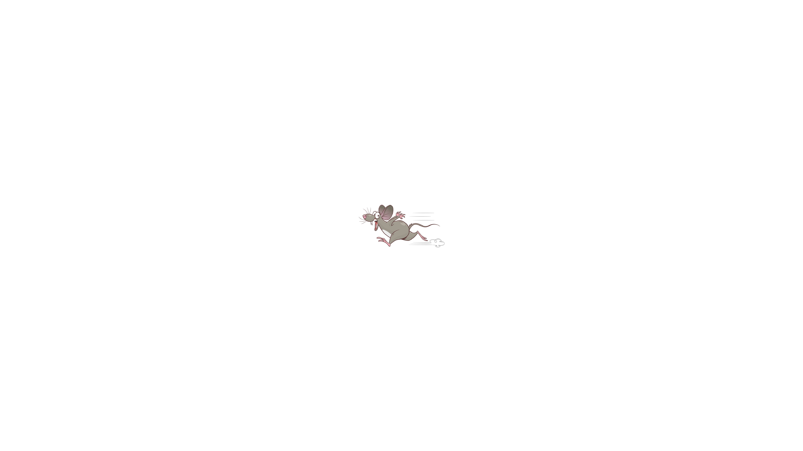

<!DOCTYPE html>
<html>

<head>
  <title>jsPsychTimelineListSortingWorkingMemory Example</title>
  <script src="https://unpkg.com/jspsych"></script>
  <script src="../dist/index.global.js"></script>
  <script src="https://unpkg.com/@jspsych/plugin-html-keyboard-response"></script>
  <script src="https://unpkg.com/@jspsych/plugin-audio-keyboard-response"></script>
  <!-- Once this timeline package is published, it can be loaded via
<script src="https://unpkg.com/@jspsych-timelines/list-sorting-working-memory"></script> -->
  <link rel="stylesheet" href="https://unpkg.com/jspsych/css/jspsych.css">
</head>

<body></body>
<script>
  const jsPsych = initJsPsych();

  const html_trial = {
    type: jsPsychHtmlKeyboardResponse,
    stimulus: ``,
    choices: "ALL_KEYS",  
  }

  const audio_trial = {
    type: jsPsychAudioKeyboardResponse,
    stimulus: '/assets/audio/audio-food/apple.mp3',
    choices: "ALL_KEYS",
    prompt: "Press any key to continue.",
  }

  const task = jsPsychTimelineListSortingWorkingMemory.createTimeline(jsPsych, { });


  jsPsych.run([task])
</script>

</html>